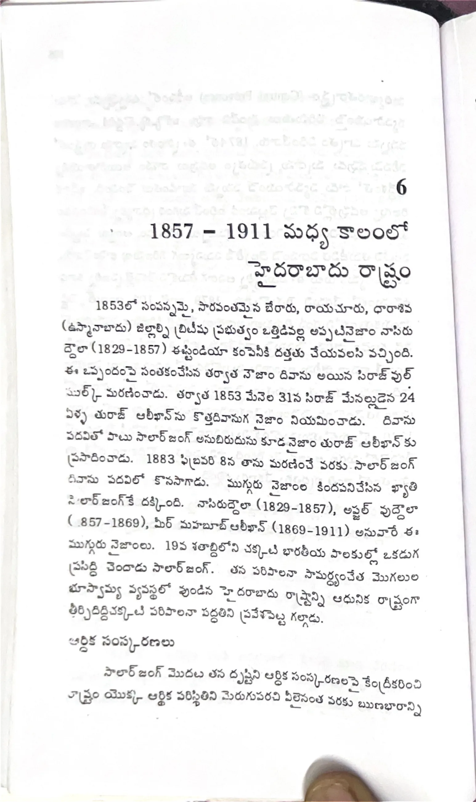

ముద్రిత పుట 106
scanతో మాన్యువల్గా ధృవీకరించిన పాఠ్యం

6 1857 - 1911 మధ్యకాలంలో హైదరాబాదు రాష్ట్రం 1853లో సంపన్నమైన, సారవంతమైన బేరారు, రాయచూరు, ధారాశివ (ఉస్మానాబాదు) జిల్లాల్ని బ్రిటిషు ప్రభుత్వం ఒత్తిడివల్ల అప్పటినైజాం నాసిరుద్దౌలా (1829-1857) ఈస్టిండియా కంపెనీకి దత్తతు చేయవలసి వచ్చింది. ఈ ఒప్పందంపై సంతకంచేసిన తర్వాత నైజాం దివాను అయిన సిరాజ్ ఉల్ ముల్క్ మరణించాడు. తర్వాత 1853 మేనెల 31న సిరాజ్ మేనల్లుడైన 24 ఏళ్ళ తురాబ్ ఆలీఖాన్ను కొత్తదివానుగ నైజాం నియమించాడు. దివాను పదవితో పాటు సాలార్ జంగ్ అనుబిరుదును కూడ నైజాం తురాబ్ ఆలీఖాన్కు ప్రసాదించాడు. 1883 ఫిబ్రవరి 8న తాను మరణించే వరకు సాలార్ జంగ్ దివాను పదవిలో కొనసాగాడు. ముగ్గురు నైజాంల కిందపనిచేసిన ఖ్యాతి సాలార్ జంగ్కే దక్కింది. నాసిరుద్దౌలా (1829-1857), అఫ్జల్ ఉద్దౌలా (1857-1869), మీర్ మహబూబ్ ఆలీఖాన్ (1869-1911) అనువారే ఈ ముగ్గురు నైజాంలు. 19వ శతాబ్దిలోని చక్కటి భారతీయ పాలకుల్లో ఒకడుగ ప్రసిద్ధి చెందాడు సాలార్ జంగ్. తన పరిపాలనా సామర్థ్యంచేత మొగలుల భూస్వామ్య వ్యవస్థలో వుండిన హైదరాబాదు రాష్ట్రాన్ని ఆధునిక రాష్ట్రంగా తీర్చిదిద్ది చక్కటి పరిపాలనా పద్ధతిని ప్రవేశపెట్ట గల్గాడు. ఆర్థిక సంస్కరణలు సాలార్ జంగ్ మొదట తన దృష్టిని ఆర్థిక సంస్కరణలపై కేంద్రీకరించి రాష్ట్రం యొక్క ఆర్థిక పరిస్థితిని మెరుగుపరచి వీలైనంత వరకు రుణభారాన్ని